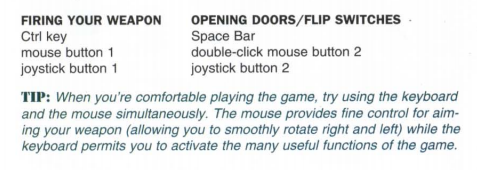
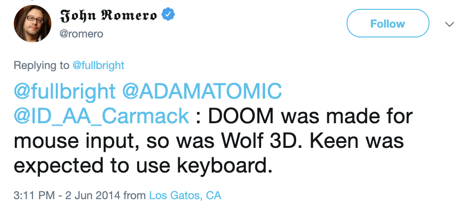

Originally posted on
the Doomworld forums in June 2019.
This seems to be an oft-repeated myth that somehow has gained a foothold in
people's memories of Doom over time. Time erodes our memories of the past and
myths like these can obscure what really happened. My goal here is to provide
a conclusive debunking of this particular myth and then if anyone ever needs a
citation in future then you can link this page.
Now first, let me clarify:
“Lots of people in the 90s played Doom with the keyboard only” - true.
“Some people even today prefer to play Doom with the keyboard only” -
true.
“DOS Doom in the '90s didn't have mouse support” - FALSE.
“Doom is meant to be played keyboard only” or “The proper way to play
Doom is without a mouse” - FALSE.
Let's look at the evidence:
Exhibit 1: The Doom manual
archive.org has a
convenient
scanned copy of the original Doom manual. This is the literal, paper
manual that shipped with the original Doom mail order versions. Turn to page 9:

Doom's own manual recommends using the mouse.
Exhibit 2: Doom SETUP prompts you for your input preference
Here's a video of the install process for DOS Doom. This is the original v1.0
shareware version of Doom that was released on December 10, 1993. The very
first thing that happens after the files are copied to your hard disk is that
the setup tool is run. The very first thing the setup tool does is ask you
your preferred control setup (Keyboard; Keyboard & Mouse; Keyboard &
Joystick).
Exhibit 3: Doom's own demos are recorded with the mouse
Here's a recording of the demo loop from Doom shareware. Again, this is v1.0,
the very first release:
From the very start of DEMO1, where the player (John Romero?) makes a quick
turn to the left, it's obvious that this is not being recorded with keyboard
controls. With a careful eye, it's obvious that the mouse is being used in all
three demos.
By the way, the same is true in the
Wolfenstein 3D built-in
demos too. Even before they started development of Doom, the id guys had
realised that the mouse was the superior controller.
Exhibit 4: John Romero himself has said Doom was made for mouse input
And Wolfenstein too.

By the way, how many people were using the mouse as opposed to only-keyboard
back in the 90s? Well,
Richard Ward's
survey from March 1994 can help to answer that question, at least for the
early days. Of 128 respondents, 36 were playing using keyboard and mouse.
That's around 28%. That compares to 78 (~61%) using keyboard only. Those
numbers would likely have changed as players became more adept at the game,
especially among deathmatch players.
Remember, I'm not disputing that many people did play using only the keyboard
- only that the game is not “intended” to be played that way, and it was both
possible and common to use the mouse.